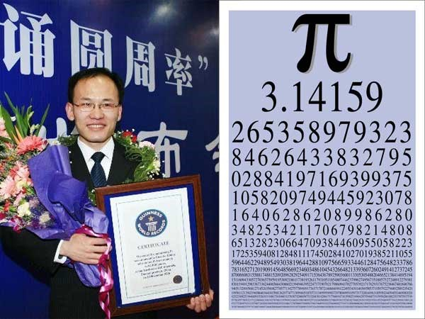
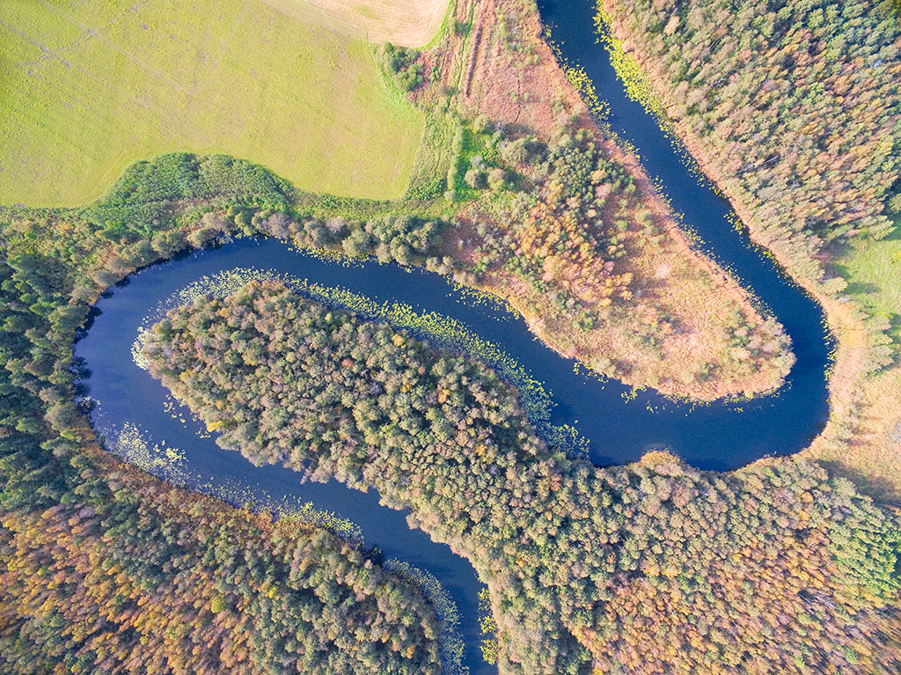

Pi Sayısı Hakkında İlginç Bilgiler
‘Pi” sayısı, matematiksel hesaplamalarda kullanılan bir sabittir. Genellikle 3,14 ya da 22/7 olarak kısaltılmış hali kullanılan bu sabit, bir çemberin çevresinin çapına oranı olarak bilinmektedir. Bu sayı bazı kaynaklarda Ludolph sayısı veya Arşimet Sabiti olarak da geçmektedir. Pi Sembolü, Yunan alfabesinin 16. Harfidir, ayrıca İngiliz alfabesinde 16. harf p harfidir. Bu harf, aynı zamanda, Yunanca çevre (çember) anlamına gelen “perimetier” kelimesinin de ilk harfidir. Pi (π) sembolü William Jones tarafından 1706 yılında tanıtılmıştır ancak sembolü popüler hale getiren 1737’de Leonhard Euler tarafından kullanılmaya başlanmasıdır. Pi Günü her yıl 14 Mart’ta kutlanmaktadır. Bu tarih sayısal olarak 3/14 ile gösterilir. Aynı zamanda Albert Einstein, Pi gününde doğmuştur.
Pi sayısının ondalık basamakları sonsuza dek uzadığı için sayılar kendilerini hiç bir şekilde düzenli tekrarlamazlar.
Bundan dolayı bir dairenin alanını ya da gerçek çevresini bulmak mümkün olmamaktadır.
Pi’nin hesaplanmış son halinde 5 trilyon basamak olduğu bilinmektedir.
Pi’nin ilk 31 basamağında hiç sıfır yoktur.
Pi sayısını hesaplamaya yönelik ilk çalışmayı, bir çemberin çapını hesaplarken içine kare çizilerek yapıldığı Rhind Papirüsü’nde görmekteyiz.
Pi’nin ilk 36 hanesine Ludolfin Numarası denir. Bu isim, yaşamının çoğunu Pi’nin ilk 36 rakamını hesaplayarak geçiren Ludolph Van Ceulen’in adını taşımaktadır.
Çinli Chao Lu, Pi’nin değerini en uzun ondalık sayıya kadar (67.890 basamak) ezberinde tutarak Guinness Dünya Rekoru kırmıştır. Bu ezberi tekrarlaması, 24 saat 4 dakika sürmüştür.
Klasik “Star Trek (Uzay Yolu)” dizisinin “Wolf in the Fold” bölümünde, Spock kötü bilgisayarı “Pi’nin son rakamını hesapla” komutuyla yok etmiştir.
1988’de Darren Aronofsky tarafından Pi: Faith in Chaos adlı bir film çekilmiştir. Film, Pi ile ilgili çeşitli cevaplar bulmaya çalışan bir adamın macerasını ve sonunda delirmesini konu alır. Aronofsky, 1988 Sundance Film Festivali’nde En İyi Yönetmenlik Ödülü’nü kazanmıştır.
Pi sayısı, birçok alanda olduğu gibi edebiyatta da karşımıza çıkmaktadır.
İngilizcede “pilish” olarak anılan, pi sayısı ile kısıtlamalı bir teknikle şiir veya yazı tekniği vardır.
>Şiirde ya da yazıda art arda gelen her kelimedeki harf sayısının pi sayısındaki rakamların sıralanışına denk gelişi olarak açıklanabilecek “pilish” tekniği, 1900’lü yılların başından beri görülmektedir.
Edgar Allen Poe’nun “The Raven” şiirini bu teknikle yeniden yazan Michael (Mike) Keith’in “Near A Raven” şiirinin başlığındaki harf sayısı 3,1415 olarak görülür.
Kısa bir örneği aşağıda verilen bu şiirin geri kalan kelimelerinin de pi ile nasıl uyuştuğunu buradan görebilirsiniz.
One / A Poem / A Raven / Midnights so dreary, tired and weary,
3......... 1....... 4........... 1..... 5....................... 9.......... 2........ 6........... 5...... 3............ 5
Pi’nin ilk on bin rakamıyla yazılan “Not a Wake” kitabı, en uzun pilish metin olarak 2010 yılında Michael Keith tarafından yayınlanmıştır.
Pi sayısı doğada da mevcuttur. Nehirlerin uzunlukları ve mendereslerin oluşması iki farklı şekilde ölçülmektedir. Bunlardan ilki, nehrin kaynaktan döküldüğü noktaya olan kuş uçuşu düz mesafesidir. İkincisi ise suyun aktığı yatağın eğri mesafesidir. Hans-Henrik Stolum nehirlerdeki bu hesaplamayı yaklaşık olarak 3,14 değerinde bulmuştur.
Rhind Papirüs
Chao Lu.
Darren Aronofsky
Pi sayısının ölçüldüğü bir nehir.